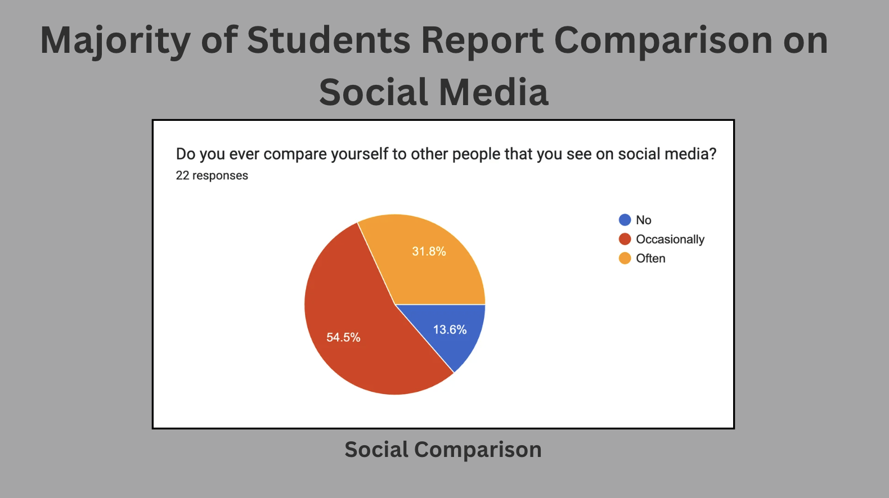
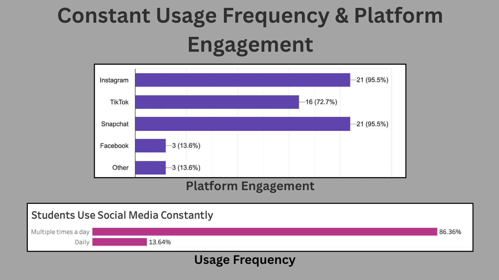

Analysis & Findings
Overview
Social media is deeply integrated into the daily lives of college students. As technology continues to advance, social media has become a primary way for individuals to stay connected, leading to increasingly frequent use. Our findings indicate that students engage with social media multiple times per day, resulting in near-constant exposure.
In addition to high usage, comparison behaviors are also prevalent. Many students report comparing themselves to others on social media, which can negatively influence self-perception and overall mental health. These patterns support our hypothesis that, while social media can have both positive and negative effects, frequent use combined with comparison behaviors is more strongly associated with negative outcomes. These trends are explored in greater detail in the following sections.
Finding #1: High Usage
Our first finding through the survey results shows that social media usage among college students is almost universal, with 100% of our survey participants reporting that they use social media. In addition to this, 86.4% of participants indicated that they use social media multiple times per day.
This high level of usage shows us that social media is deeply integrated into college-age students’ daily routines. Because of this, students are frequently exposed to content on social media that has the potential to influence mood, behavior, and well-being. The constant exposure can make it difficult for students to avoid the effects of social media, whether they are positive or negative.
Finding #2: Social Comparison
Social comparison is a common behavior among college students. While comparison naturally occurs in environments surrounded by peers, social media significantly amplifies this tendency.
In our survey data, we found that 54.5% of students compare themselves to others occasionally, while 31.8% report doing so often. This indicates that the majority of students engage in comparison behaviors, suggesting that it is both normalized and a regular part of social media use.
This finding is significant because frequent comparison is associated with lower self-esteem and negative self-perception. Students often compare aspects such as appearance, lifestyle, and personal success, which can create pressure to measure up to others. Over time, this pressure can contribute to increased stress, anxiety, and overall dissatisfaction.
Social media further intensifies this effect by presenting curated and idealized versions of others’ lives. As a result, users are often comparing their everyday reality to someone else’s highlight reel, making these comparisons both unrealistic and potentially harmful.

Finding #3: Platform Usage
When it comes to platform usage, we found that the most commonly used platforms among our respondents were Instagram and Snapchat. These platforms are mainly used to share images and videos through posts and stories, to represent daily life.
Since these platforms tend to show curated and idealized versions of people’s lives, they can potentially contribute to increased comparison and pressure to portray your life a certain way on social media. Students are often exposed to curated content that can warp perceptions of reality. We found that this pattern suggests that these platforms may play an important role in social media’s impact on mental health.

Connection to Literature
Ultimately, our findings are consistent with existing research. Our survey revealed high levels of social comparison, which aligns with prior studies, such as Anto et al. (2023) and the U.S. Surgeon General (2023) advisory, both of which identify comparison as a key factor linked to increased anxiety and negative self-esteem.
Additionally, our data showed frequent daily social media use among students, reflecting patterns identified in research by Fruehwirth et al. (2024) and Fatima et al. (2025), which associate high usage with increased levels of anxiety, depression, and stress. These similarities indicate that the trends observed in our survey are not isolated, but are supported by broader academic findings.
Importantly, our data provides real-world insight into these patterns, demonstrating how they appear in the everyday experiences of college students. Because our findings align with existing research, they strengthen the credibility of our conclusions and reinforce the reliability of our results. This consistency confirms that our findings are both meaningful and relevant.
Visualizations
We used the survey data to create several visualizations that help illustrate our findings from the project. One of our graphs displays social media usage frequency, which shows that the majority of students use social media several times a day. This highlights the frequency of social media usage and how popular it is among college students, reinforcing how deeply integrated it is and highlights the constant exposure they experience.
Another visualization shows comparison behavior, highlighting that more than half of our respondents compare themselves to people they see on social media at least occasionally, emphasizing the prevalence of comparison behaviors. This shows the significant link between social media and comparison and self-esteem issues.
Our last graph shows platform usage and highlights the different amounts that our respondents use different social media platforms. This graph shows Instagram and Snapchat as the most used platforms, having a potentially larger role in the effects of social media on students. This suggests that visually driven platforms may play a significant role in shaping comparison behaviors and influencing mental health outcomes. These visualizations help clearly show the patterns in the research we conducted.